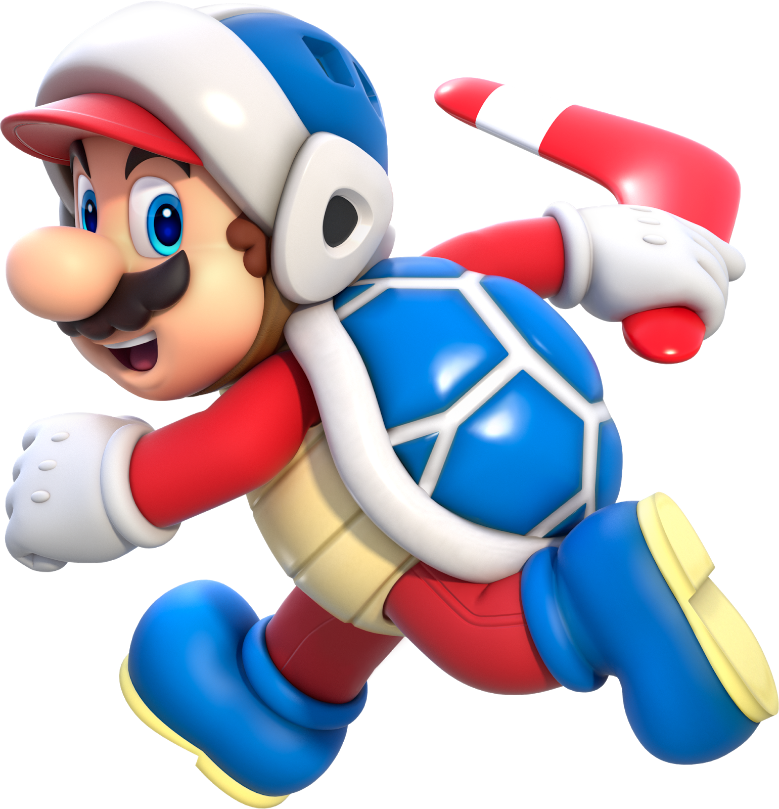

Curiosidades sobre o Mario

- Mario apareceu pela primeira vez em 1981, no jogo Donkey Kong.
- Seu nome foi inspirado no dono do armazém da Nintendo nos EUA, Mario Segale.
- Mario já participou de mais de 200 jogos diferentes!
- Yoshi foi criado para o Super Mario World, lançado em 1990.
- Mario já foi médico, piloto de kart e até jogador de futebol.
Voltar ao Início